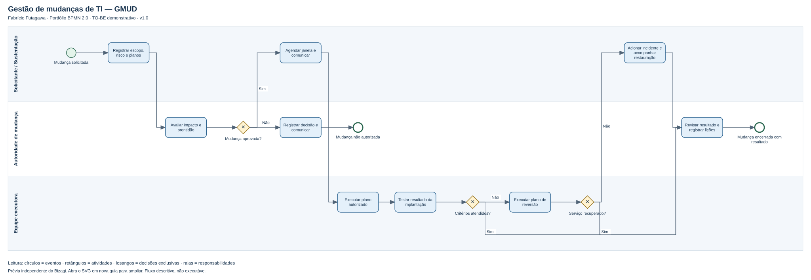
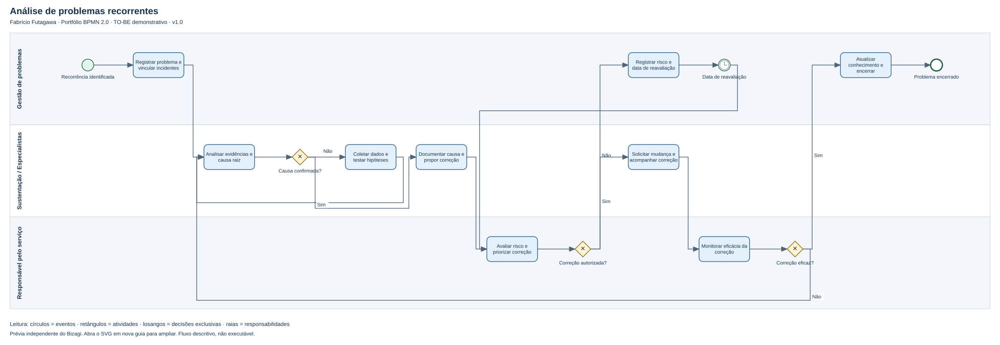

PORTFÓLIO PROFISSIONAL
Da sustentação à governança de TI.
Estudos de caso em Bizagi e BPMN que aplicam a experiência com sustentação de ERP à gestão de serviços e à melhoria de processos.
Explorar projetosEstudos de caso
Três cenários demonstrativos de ITSM, com diagramas BPMN 2.0, controles e indicadores para avaliar em um piloto.

Operação de serviços
Gestão de incidentes de ERP
Triagem, escalonamento e validação com o negócio para restaurar o serviço com rastreabilidade.
Ver estudo de caso
Governança de TI
Gestão de mudanças de TI
Planejamento, autorização e reversão de mudanças normais em um fluxo de GMUD.
Ver estudo de caso
Melhoria contínua
Análise de problemas recorrentes
Investigação de causa raiz, reavaliação de pendências e verificação da eficácia da correção.
Ver estudo de casoSOBRE MIM
Fabrício Futagawa
Atuo em sustentação de TI, com experiência em ERP, atendimento N1/N2/N3, investigação de incidentes, SQL e acompanhamento de SLAs e GMUDs. Estou direcionando minha carreira para Governança de TI e Processos, com foco em responsabilidades, controles e indicadores que ajudem a melhorar a operação.
Formação e certificações
- ITIL® 4 Foundation
- COBIT® 2019 Foundation
- EXIN Information Security Foundation (ISO/IEC 27001)
- Lean Six Sigma Yellow Belt
- Formação em BPM e BPMN pela ABPMP Brasil